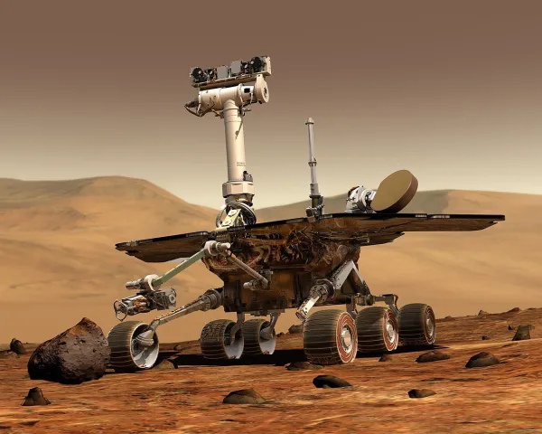

Spirit: A Journey of Discovery
NASA's Spirit rover landed on Mars on January 3, 2004. Its mission was to explore the Martian surface, study rocks and soil, and search for evidence of ancient water.
Spirit continued working far beyond its original planned mission. In 2009, it became stuck in soft soil. NASA lost communication with Spirit in March 2010 and ended recovery efforts in 2011.
What Remains?
Spirit remains on the surface of Mars, a reminder of its remarkable exploration journey.

Opportunity: Beyond Expectations
Opportunity landed on Mars on January 24, 2004. It was designed to search for signs that water once existed on the planet.
The rover continued exploring for almost 15 years. In 2018, a massive dust storm covered the Martian sky. NASA could no longer communicate with Opportunity. Its mission officially ended in February 2019.
A Lasting Legacy
Opportunity left behind years of discoveries that helped scientists understand Mars and its past.